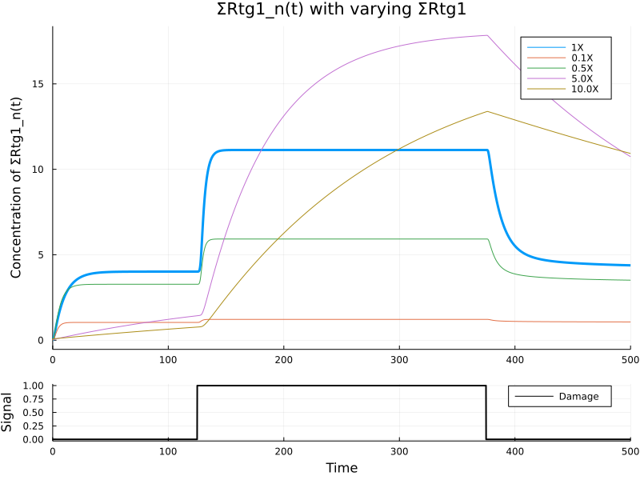
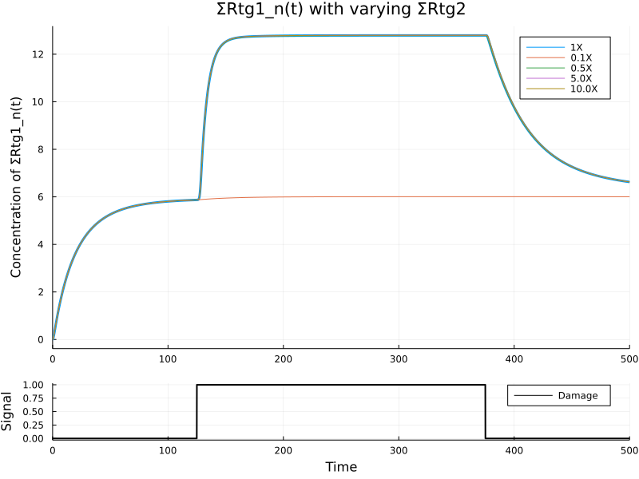
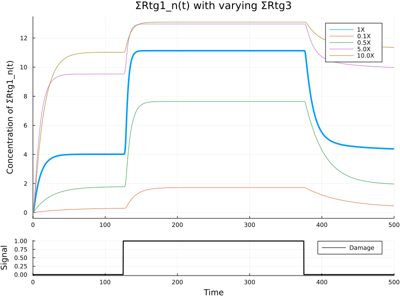
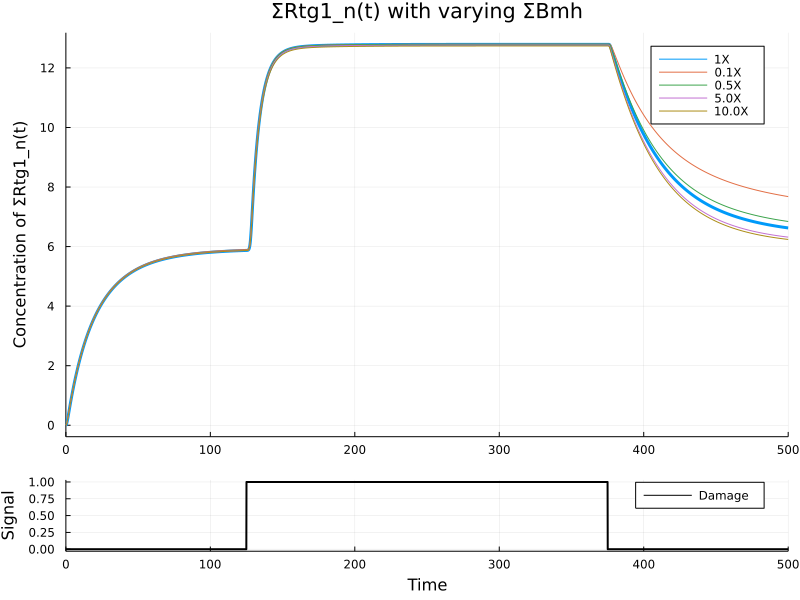
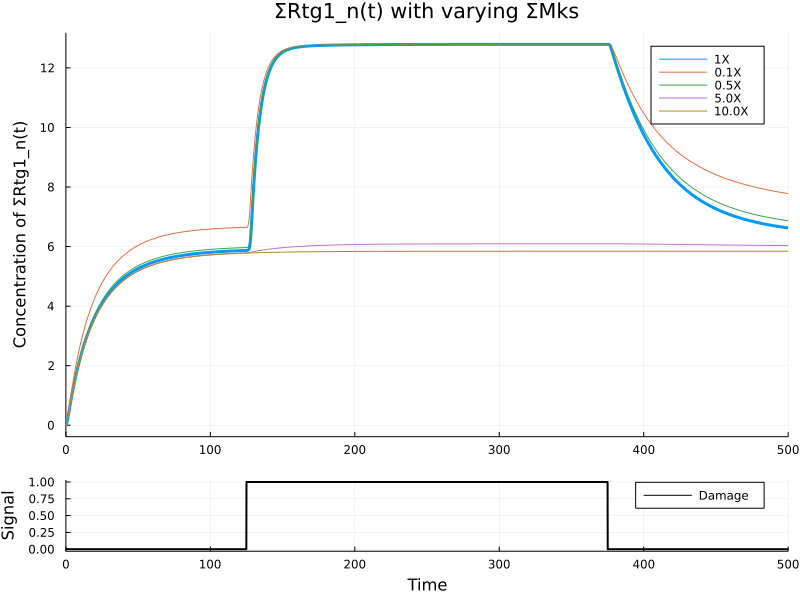
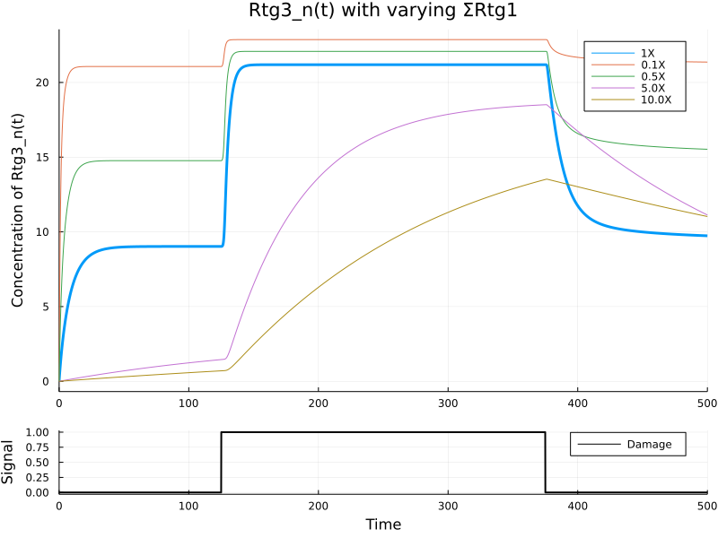
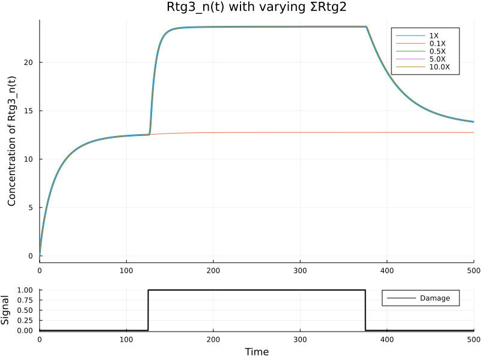
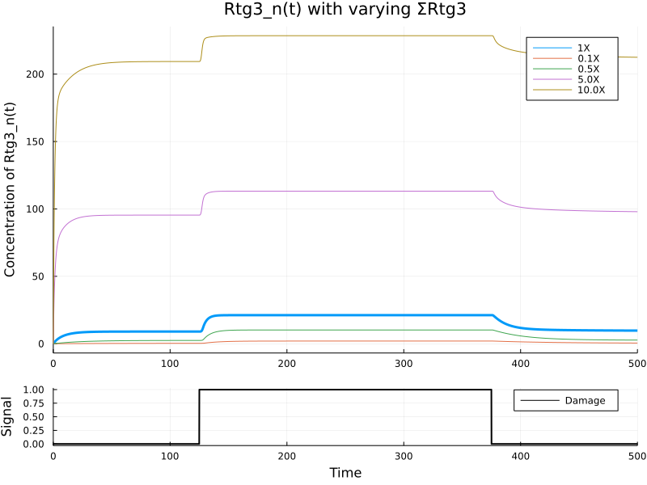
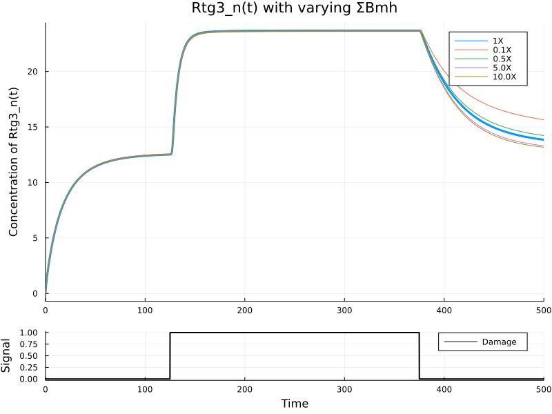
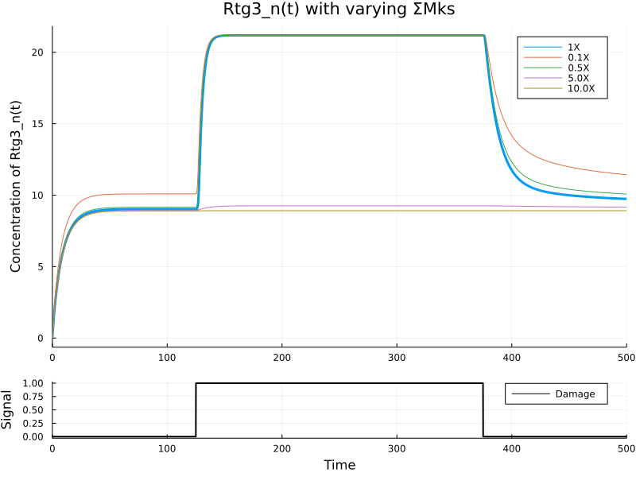

Effects of different protein expression levels
Contents
Effects of different protein expression levels#
using ModelingToolkit
using DifferentialEquations
using Plots
using RetroSignalModel
using RetroSignalModel: t
import RetroSignalModel as rs
┌ Info: Precompiling RetroSignalModel [8bac15de-65a1-44a4-8b6e-7c4bf648ff0c]
└ @ Base loading.jl:1662
# Make positive sine wave
function make_pos_sine(; amplitude=1, frequency=1, phase=0)
return t -> 0.5 * amplitude * (sinpi(2 * frequency * t + phase) + 1)
end
# Make square wave
function make_square_wave(; hi=1, lo=0, duty=(0.25, 0.75))
return t -> ifelse(duty[1] <= t <= duty[2], hi, lo)
end
make_square_wave (generic function with 1 method)
params = load_parameters("solution_rtgM4.csv")[1]
tend = 500.0
edges = (125.0, 375.0)
signal(t) = edges[begin] <= t <= edges[end] ? 1.0 : 0.0
@register_symbolic signal(t)
@named sys = RtgMTK(signal)
\[\begin{split} \begin{align}
\frac{dRtg2A_{c(t)}}{dt} =& - v(t)_2 + v(t)_1 \\
\frac{dRtg13A_{c(t)}}{dt} =& - v(t)_4 + v(t)_7 \\
\frac{dRtg13I_{c(t)}}{dt} =& v(t)_4 + v(t)_8 \\
\frac{dRtg3A_{c(t)}}{dt} =& - v(t)_7 - v(t)_{1 2} + v(t)_5 \\
\frac{dRtg3A_{n(t)}}{dt} =& - v(t)_6 - v(t)_9 + v(t)_{1 2} \\
\frac{dRtg3I_{n(t)}}{dt} =& - v(t)_{1 0} + v(t)_6 + v(t)_{1 3} \\
\frac{dRtg1_{n(t)}}{dt} =& - v(t)_9 - v(t)_{1 0} + v(t)_{1 1} \\
\frac{dBmhMks(t)}{dt} =& - knBM \mathrm{BmhMks}\left( t \right) + kBM \mathrm{Bmh}\left( t \right) \mathrm{Mks}\left( t \right) \\
\frac{dRtg2Mks_{c(t)}}{dt} =& v(t)_2 \\
\frac{dRtg13A_{n(t)}}{dt} =& v(t)_9 \\
\frac{dRtg13I_{n(t)}}{dt} =& v(t)_{1 0}
\end{align}
\end{split}\]
function plot_varying_protein(sys, params, protein, protein_level, observed;
multipliers=(0.1, 0.5, 5.0, 10.0), figsize=(800, 600), kwargs...)
u0 = rs.resting_u0(sys)
ps = copy(params)
ps[protein] = protein_level
prob = ODEProblem(sys, u0, tend, ps)
sol = solve(prob, tstops=edges)
psol = plot(sol, vars=[observed]; linewidth=3, legend=:topright, label="1X",
title=string(observed, " with varying ", protein),
ylabel=string("Concentration of ", observed))
for μ in multipliers
ps[protein] = μ * protein_level
prob = ODEProblem(sys, u0, tend, ps)
sol = solve(prob, tstops=edges)
plot!(psol, sol, vars=[observed]; linewidth=1, legend=:topright, label="$(μ)X", xlabel="", kwargs...)
end
#Plot signal
psig = plot(sol, vars=[rs.s], label="Damage", xlabel="Time", ylabel="Signal", line=(:black, 2))
plot(psol, psig, layout=grid(2, 1, heights=[0.85, 0.15]), size=figsize)
end
plot_varying_protein (generic function with 1 method)
Simulations#
The product of the following
Waveforms: Square (125-375 sec duty cycle)
Parameter to change: 5 Protein levels
Protein amount:
(0.1, 0.5, 5.0, 10.0)times of reference levels.
End point: ratio of nucleus to cytosol concentrations of Rtg1 and Rtg3
plot_varying_protein(sys, params, rs.ΣRtg1, rs.STRESSED[rs.ΣRtg1], rs.ΣRtg1_n)

plot_varying_protein(sys, params, rs.ΣRtg2, rs.STRESSED[rs.ΣRtg2], rs.ΣRtg1_n)

plot_varying_protein(sys, params, rs.ΣRtg3, rs.STRESSED[rs.ΣRtg3], rs.ΣRtg1_n)

plot_varying_protein(sys, params, rs.ΣBmh, rs.STRESSED[rs.ΣBmh], rs.ΣRtg1_n)

plot_varying_protein(sys, params, rs.ΣMks, rs.STRESSED[rs.ΣMks], rs.ΣRtg1_n)

plot_varying_protein(sys, params, rs.ΣRtg1, rs.STRESSED[rs.ΣRtg1], rs.Rtg3_n)

plot_varying_protein(sys, params, rs.ΣRtg2, rs.STRESSED[rs.ΣRtg2], rs.Rtg3_n)

plot_varying_protein(sys, params, rs.ΣRtg3, rs.STRESSED[rs.ΣRtg3], rs.Rtg3_n)

plot_varying_protein(sys, params, rs.ΣBmh, rs.STRESSED[rs.ΣBmh], rs.Rtg3_n)

plot_varying_protein(sys, params, rs.ΣMks, rs.STRESSED[rs.ΣMks], rs.Rtg3_n)
